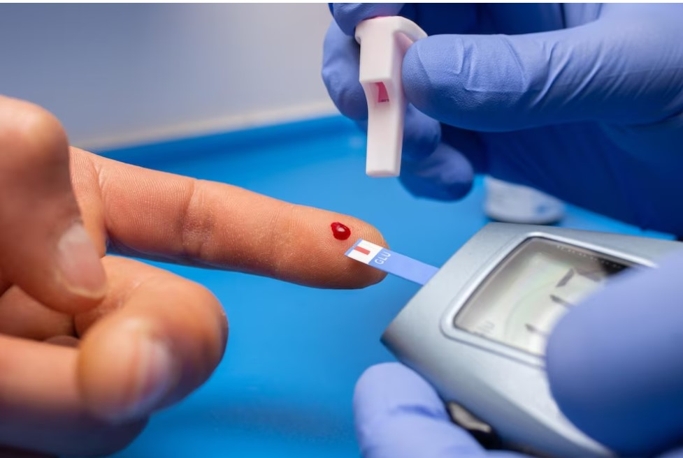

Como identificar os diferentes tipos de diabetes
Diabetes tipo 1
É uma doença autoimune, o que significa que o corpo ataca e destrói as células do pâncreas que produzem insulina. A insulina é um hormônio que ajuda o corpo a usar a glicose como energia.

Diabetes tipo 2
É o tipo mais comum de diabetes. É causado pela combinação de resistência à insulina e deficiência de insulina. A resistência à insulina ocorre quando as células do corpo não respondem adequadamente à insulina.

Diabetes gestacional
É um tipo de diabetes que ocorre durante a gravidez. É causada por uma combinação de fatores, incluindo resistência à insulina e aumento da produção de hormônios pelo corpo da mulher durante a gravidez.

Outros tipos de diabetes
existem outros tipos de diabetes menos comuns, como diabetes tipo 3c, diabetes monogênico e diabetes secundária.